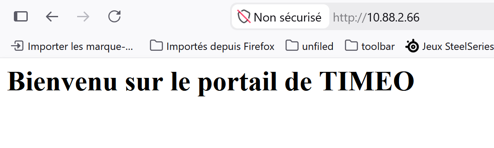

Contexte
Le lab simule un petit environnement datacenter ou les services doivent etre exposes de facon controlee, avec separation des zones et limitation des flux.
Securite reseau / Palo Alto
Lab de segmentation d'un mini datacenter virtualise avec Palo Alto, cinq zones reseau, services WEB/FTP/SSH, regles horaires et restriction du management.
Le lab simule un petit environnement datacenter ou les services doivent etre exposes de facon controlee, avec separation des zones et limitation des flux.
La topologie repose sur VMware, plusieurs VMnet, un pare-feu Palo Alto en interfaces Layer 3 et des zones dediees pour les utilisateurs, serveurs et fonctions d'administration.
Le point sensible est la coherence entre plan d'adressage, interfaces VMware, zones Palo Alto, routes statiques et regles de securite. Chaque couche doit correspondre aux autres.
Workflow
Captures



Le lab valide une approche complete : architecture, configuration, securisation des flux, tests de services et documentation par captures.
Ajouter des journaux d'analyse, une matrice de flux, des tests de refus documentes et une supervision des services.